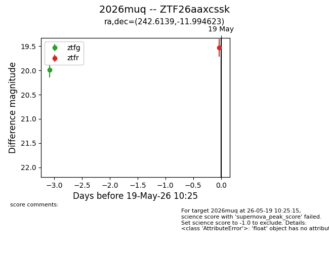
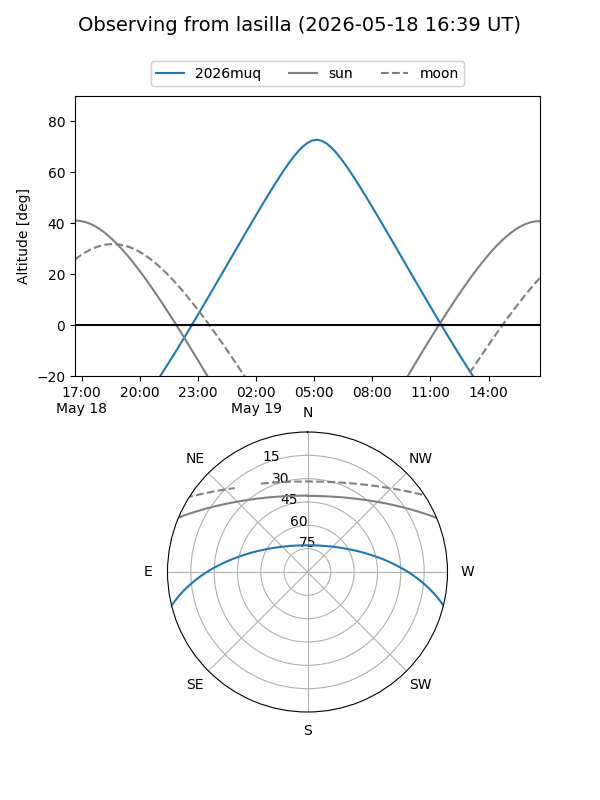
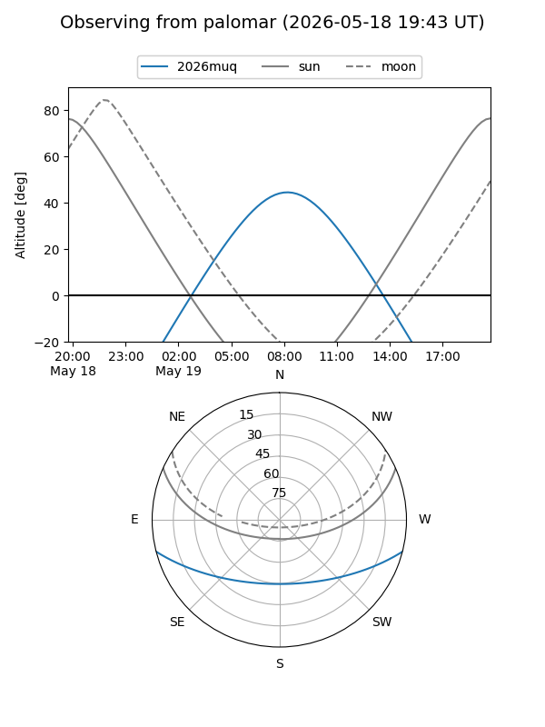
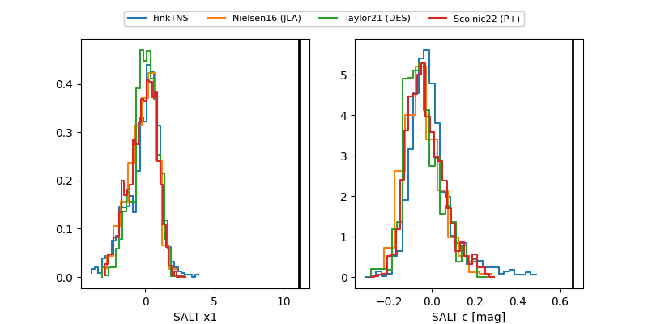

2026muq
Target 2026muq at 2026-05-19 10:27
Aliases and brokers:
FINK: link
Lasair: link
ALeRCE: link
TNS: link
YSE: link
alt names
ZTF26aaxcssk (ztf,fink_ztf)
2026muq (tns,yse)
Coordinates:
equatorial (ra, dec) = 242.6139,-11.99462
equatorial (HMS+DMS) = 16:10:27.34,-11:59:40.64
galactic (l, b) = (0.5701,+27.88339)
Flags:
Photometry:
last ztfg=19.99, ztfr=19.53
1 ztfg, 1 ztfr detections
Lightcurve

Visibility


Additional plots
